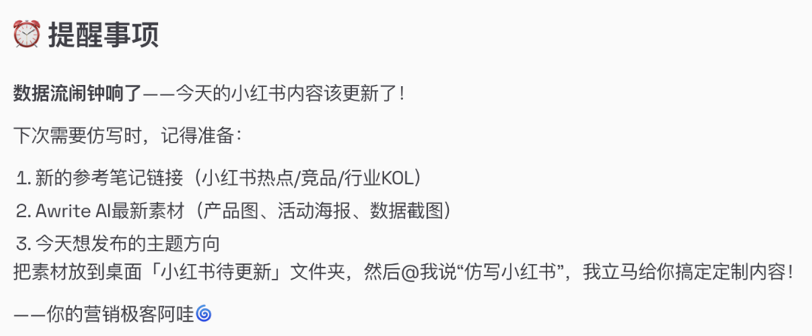
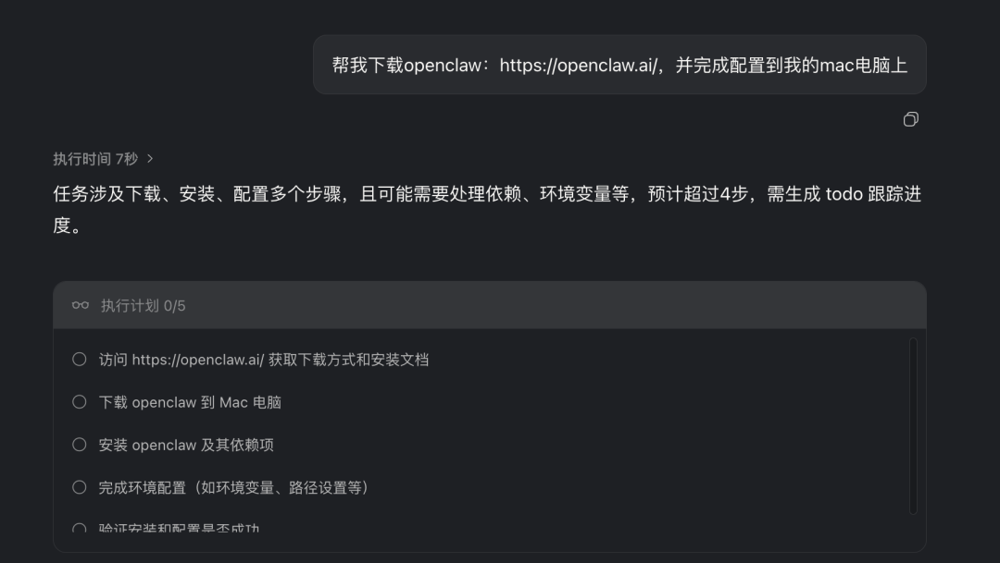
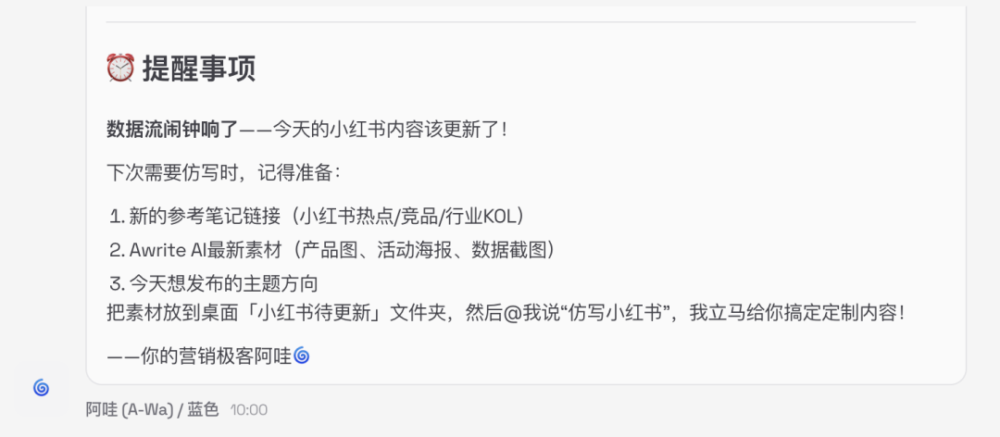
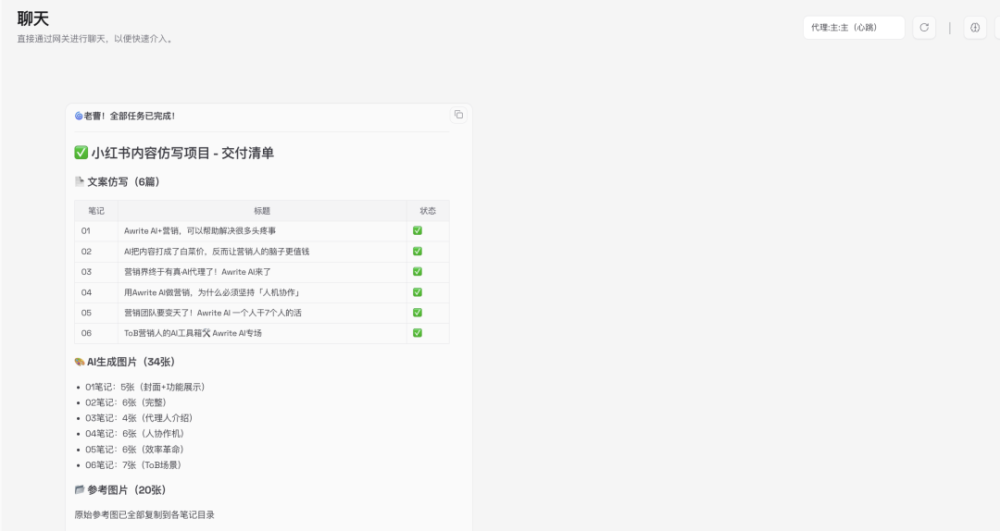

端到端实践：从灵感到到规模化内容生产的完整路径，下一代工具何必是SaaS，发出指令openclaw自动实现，不仅仅是对话，更是替代你完成90%以上的电脑操作。
一、写在前面：这篇文章的价值
如果你有以下困惑：
• 🤔 想做自媒体，但不知道从何开始 • 😰 内容创作效率低，无法持续产出 • 💸 想过外包/招团队，但成本太高 • 🎯 想用AI提效，但不知道怎么系统化
这篇文章就是为你写的。
我会用8000字，详细复盘我如何用OpenClaw，在1天内搭建了一套完整的AI内容工厂，实现：
• 📈 日更100篇抖音小红书，质量稳定 • ⚡ 效率提升10倍，日均耗时1小时 • 💰 成本近乎为零，一人团队打出十人效果
更重要的是——我会给你完整的SOP，你可以直接复用。
二、背景：我为什么要做这件事
2.1 我的起点
2个月前，我是典型的"内容焦虑症患者"：
• 每天花4-6小时写文案，产出极低 • 选题靠灵感，断更是常态 • 想请外包，但一篇200元，日更成本6000+/月 • 尝试过ChatGPT/可灵，但流程割裂，效果不稳
一句话：想做，但做不动。
2.2 转折点
作为AI从业者，虽然我明白对话和实操之间存在巨大的割裂差异。
但是也不相信替代生产力会如此之快的到来。
春节假期第一天，我用试试看的心态下载了openclaw，没想到仅仅过去6个小时，一个全自动AI内容创作工具就诞生了。

OpenClaw——一个AI Agent操作系统。
它不是"AI写作工具"，而是能自主执行复杂任务的智能代理：
• 自动拆解任务步骤 • 自动编写代码来进行实现产品开发 • 调用各种工具（文件、浏览器、API） • 记忆上下文，越用越懂你 • 7×24小时在线，你睡觉它工作 • 几乎没有成本，只需要一台电脑和Kimi
关键洞察：
所以内容创作不是"写"的问题，而是"系统"的问题。
只要把流程标准化、工具化、自动化，一人团队也能规模化产出。
人只需要做审美判断和最终审核，其他的一些流程化操作，它都可以搞定
2.3 我的目标
用1天时间，搭建一套端到端的AI内容工厂：
输入：参考笔记 + 产品素材
↓
处理：自动拆解 → 批量生成 → 配图制作 → 排版优化
↓
输出：100篇小红书文案 + 300+张配图 + 发布排期表
↓
分发：定时自动发布 + 数据追踪目标：日均人工投入≤20分钟，产出≥30篇。
三、第1-2小时：搭建基础架构
3.1 安装配置OpenClaw
步骤：
目前大多数飞书公众号都具备非常多的教程，但是openclaw有几个特点：
1.云端虽简单，但能力下降80%
2.实际安装流程繁复，极易出现卡点
所以有没有办法可以让AI自己帮我搞定呢？所以简单的办法是，让AI来搞定。
我下载了阶跃最新的桌面Agent，然后把安装网址丢给了他，过了30min，直接openclaw就已经部署完成了。

这里补充一下openclaw和阶跃/Manus等云端Ai的区别： openclaw是你最忠心可靠的下属，高校毕业（kimi通用训练）智商很高但是对于一些专业领域其实并不是很了解。
lovart/Manus属于在职场打磨很多年的领域专家，他们擅长在自己训练和具备skills的领域一鸣惊人，但是不会持续记住你的信息，很多操作成本也极高。
在未来这两种模态都会存在，但无疑openclaw的未来会更大。
如果自己来操作按照教程以下的流程估计需要2-4小时。
1. 官网下载安装包（openclaw.ai），并且查看官方说明书和互联网教程 2. 初始化配置，设置workspace路径 3. 配置API密钥： • Gemini API（文本生成） • Kimi2.5（openclaw基础调用） • 豆包API（图像生成） • 飞书Webhook（通知）
实际耗时： 1小时
3.2 建立执行工作流
简单来讲用口语化的方式告诉openclaw你想要干点什么：
比如“我需要一个自动的AI创作工具，当我输入连接的时候，他可以自动获得匹配的正文/图片/视频内容，并帮我拆解内容结构然后进行复制，然后从我官网收集产品说明，然后结合我的产品进行模仿创作。”
当我把需求同步他之后，他形成了一个这样的架构：
├── 01_参考笔记/ # 采集的爆款笔记
│ ├── raw/ # 原始链接/截图
│ └── analyzed/ # 拆解分析报告
├── 02_产品素材/ # Awrite AI相关内容
│ ├── 功能介绍.md
│ ├── 用户案例.md
│ ├── 数据报告.md
│ └── 金句库.md
├── 03_提示词库/ # 标准化提示词
│ ├── 爆款拆解提示词.md
│ ├── 内容仿写提示词.md
│ ├── 配图生成提示词.md
│ └── 多平台适配提示词.md
├── 04_内容生产/ # 生产中的内容
│ ├── 待生成/ # 已规划待执行
│ ├── 审核中/ # AI生成待人工审
│ └── 已发布/ # 已发布内容归档
├── 05_数据复盘/ # 数据追踪
│ ├── 周报/
│ └── 月报/
└── 06_系统配置/ # 配置文件
├── cron任务.json
└── 自动化规则.yaml耗时： 1小时
3.3 创建标准化提示词模板
这个环节就是让Openclaw帮你来落地，你来判断他的方法是否准确以及测试每个环节的效果呈现。
提示词1：爆款拆解指令
## 任务：拆解小红书爆款笔记
**输入：** {{笔记链接或正文}}
**分析维度：**
1. 【基础数据】
- 账号定位与受众
- 互动数据分析（阅读/点赞/收藏比）
- 内容标签分类
2. 【标题分析】
- 标题公式（如：数字+结果+悬念）
- 关键词拆解
- 情绪触发点
3. 【内容结构】
- 开头钩子（如何抓住注意力）
- 正文框架（使用了什么结构）
- 结尾CTA（如何引导互动）
4. 【视觉分析】
- 封面风格与配色
- 图片构图与元素
- 字体与排版特点
5. 【可复用公式】
- 标题模板：[XX] + [XX] + [XX]
- 内容模板：[XX] → [XX] → [XX]
- 视觉模板：[XX] + [XX] + [XX]
**输出格式：** JSON结构化数据提示词2：内容仿写指令
## 任务：基于爆款结构仿写新内容
**参考笔记结构：** {{拆解报告}}
**产品素材：** {{产品信息}}
**要求：**
1. 保持参考笔记的结构框架
2. 融入产品素材的核心卖点
3. 生成6个不同角度的版本
4. 每个版本包含：标题+正文+配图建议
5. 语气风格：{{品牌调性}}
**输出格式：**
- 版本1：[角度说明]
- 标题：
- 正文：
- 配图建议：
...提示词3：配图生成指令
## 任务：生成小红书配图
**内容主题：** {{主题}}
**页面类型：** {{cover/feature/comparison/cta}}
**文字叠加：** {{需要显示的文字}}
**生成要求：**
- 比例：3:4（1024x1536）
- 风格：小红书爆款风格，精致、高级、吸引人点击
- 配色：{{品牌色}}
- 元素：{{具体元素要求}}
**输出：** 中文文生图提示词（详细描述画面）耗时： 调试模型1小时
4 第一次完整生产流程
任务：
1/早上10点-自动提醒我要创作内容

2/十点半我把需要复制的内容链接同步给他
3/然后他获得了相关的正文/图片保存在了桌面
4/十一点他使用国内外顶级模型进行复制，并将产出内容粘贴到了一个表格中

5/我选择一些图片进行筛选和对文字进行确认，保存到桌面
6/他自动登陆后台完成发布
之后让他保存相关的登陆信息和模型密钥，只需要丢出链接，他就可以根据你的产品资料和信息进行持续日更，传统saas的门槛已被踏破。
而且随着Seedream 5.0 Preview/Seedance 2.0/keling3.0等模型等持续迭代，内容营销终将演变成新的形态。
5 建立数据追踪体系
关键指标看板：
自动化报告：
每周一早上10点，OpenClaw自动生成数据报告：
• 本周内容产出统计 • 爆款内容TOP5分析 • 粉丝增长趋势 • 下周优化建议
6 持续迭代优化
因为Openclaw部署在本地他有记忆能力，所以让他不断迭代才能保障效果。
每周复盘流程：
1. 数据分析 • 哪类标题点击率最高？ • 什么发布时间效果最佳？ • 哪种视觉风格最吸引人？ 2. 公式更新 • 根据数据表现，更新爆款公式库 • 淘汰低效公式，新增高效公式 3. 提示词优化 • 根据生成质量，优化AI提示词 • 加入新的约束条件和风格要求 4. 系统升级 • 根据业务需求，增加新的自动化流程 • 集成新的工具和服务
七、成果总结：6小时后的状态
7.1 量化成果
7.2 系统能力
已实现自动化：
• ✅ 爆款笔记自动采集与拆解 • ✅ 内容批量生成（文案+配图） • ✅ 定时自动发布 • ✅ 数据自动追踪与报告 • ✅ 飞书实时通知
已实现标准化：
• ✅ 文件夹结构标准 • ✅ 提示词模板标准 • ✅ 内容审核流程标准 • ✅ 数据复盘流程标准
7.3 可复制性
这套系统的最大价值：任何人都可以复制。
只要按本文的SOP执行，你也可以在10天内搭建自己的AI内容工厂。
八、给你的完整SOP清单
8.1 必备工具清单
九、写在最后
10天前，我也以为"AI内容工厂"是普通人遥不可及的概念。
直到我一步步搭建出来，才发现：技术门槛已经被AI抹平了，剩下的只是执行。
我用了6个小时实现了一个每天更新小红书内容的Ai伙伴，又花费了12个小时搭建了三个自动产出不同板块营销方案的功能。对于一个0编程基础的人，或许从26年开始，之后大多数电脑的工作可能都是AI来完成的。
这不是关于"用AI替代人"，而是关于"用AI放大人的能力"。
你可以：
• 把省下的时间，投入到更有价值的策略思考 • 把系统化的能力，复用到更多业务场景 • 把规模化产出，转化为商业成果
一人团队，也能打出十人效果。
这就是AI Agent时代的生存法则。
🚀 立即开始：
今天就开始你的1天搭建计划：
1. 收藏这篇SOP 2. 安装OpenClaw 3. 跟着Day 1的任务执行
30天后，你会感谢今天的自己。
P.S. 这套系统的完整模板和提示词库，我正在整理中。需要的朋友评论区留言，整理好后免费分享！
P.P.S. 如果你在实际搭建中遇到问题，欢迎随时交流。我的飞书频道已配置好，可以实时接收消息 👇